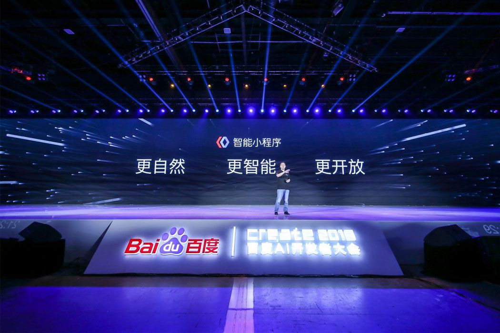

7月4日，「Baidu Create 2018」百度AI开发者大会在北京国家会中心举办，会上，百度副总裁沈抖正式对外发布了百度智能小程序。据介绍，百度智能小程序不仅可以全面接入百度大脑的AI能力，更将在今年12月全面开源，为用户和开发者打造一个体验更佳的开放、智能化移动生态。包括携程、苏宁易购、唯品会、同程、春雨医生爱奇艺、优信二手车、查违章等在内的近百家企业成为首批加入智能小程序生态的合作伙伴，并将陆续推出各自的智能小程序。
作为业界首个开放的小程序生态，百度智能小程序的开放性体现在两个层面。
首先，开发者只要简单修改几行代码，就可以将自己在其他平台开发的小程序接入百度智能小程序，进而让这个智能小程序无缝运行在百度系App「百度App、百度贴吧、百度网盘等」以及外部App「哔哩哔哩、58同城等」上，实现一端开发，多端可运行。

其次，百度还将开放全域千亿流量扶持开发者，帮 的技能。百度将开放AI能力，让开发者重回业务理解与创意的赛道，专注于自己的业务逻辑。”
据悉，来自百度大脑3.0的AI能力将全部开放给智能小程序开发者，这些能力包括语音、视觉、自然语言处理、知识图谱、增强现实以及情景感知等类别，其中部分能力甚至已经封装好，开发者直接调用即可。作为业界首个开放的小程序生态，百度智能小程序的开放性体现在两个层面。
首先，开发者只要简单修改几行代码，就可以将自己在其他平台开发的小程序接入百度智能小程序，进而让这个智能小程序无缝运行在百度系App「百度App、百度贴吧、百度网盘等」以及外部App「哔哩哔哩、58同城等」上，实现一端开发，多端可运行。
其次，百度还将开放全域千亿流量扶持开发者，帮助他们快速沉淀精准用户。值得注意的是，百度流量与其他平台不同的是，百度流量中天然存在大量与资讯、服务、工具等相关的需求，尤其是在百度信息流中，用户看到的内容都是根据兴趣匹配推荐的，这些内容可以激发用户各类需求，非常适合开发者去挖掘。
沈抖强调：“如今，AI已不再是‘锦上添花’，而是必备的技能。百度将开放AI能力，让开发者重回业务理解与创意的赛道，专注于自己的业务逻辑。”
据悉，来自百度大脑3.0的AI能力将全部开放给智能小程序开发者，这些能力包括语音、视觉、自然语言处理、知识图谱、增强现实以及情景感知等类别，其中部分能力甚至已经封装好，开发者直接调用即可。
同时，得益于百度的AI技术，百度智能小程序还可以基于大数据、意图识别、兴趣识别等技术精准的找到各类智能小程序用户，有效缩短用户转化途径，为开发者和合作伙伴带来实实在在的商业效益。例如，接入百度智能小程序后，「查违章智能小程序」全网的DAU在50天内增长了370%，火车票智能小程序订单转化率在20天内提升了44%。同时百度贴吧小程序上线以来，用户人均使用时长也增加了30%以上。